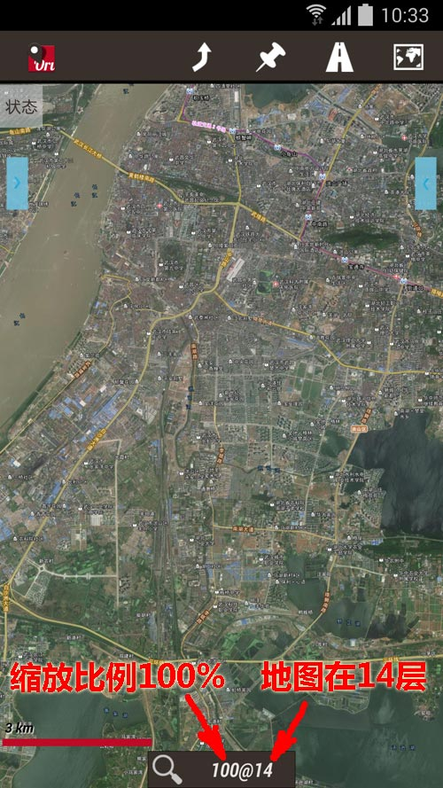
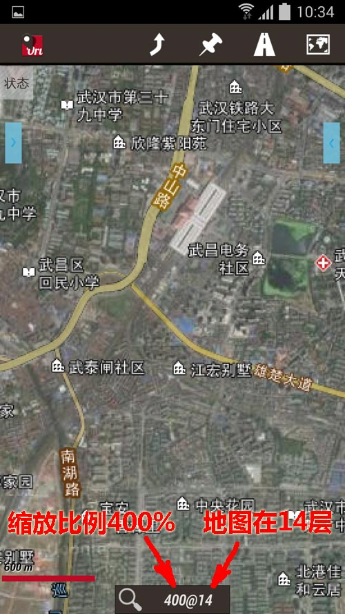
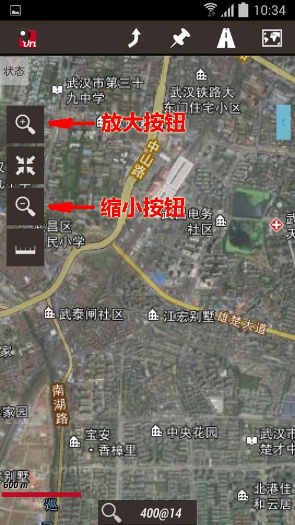
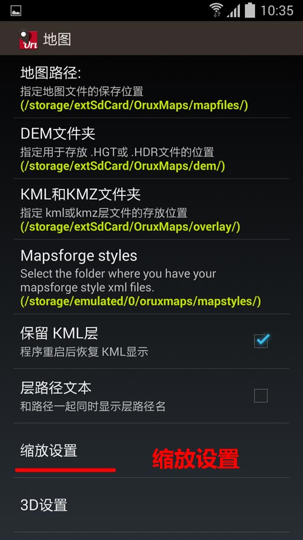
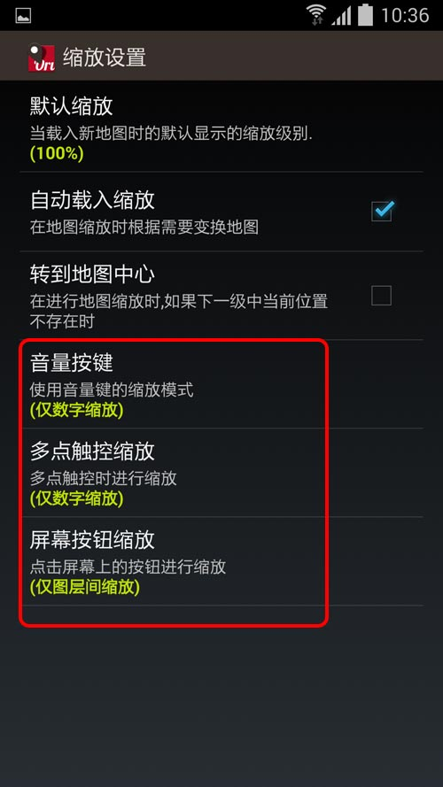
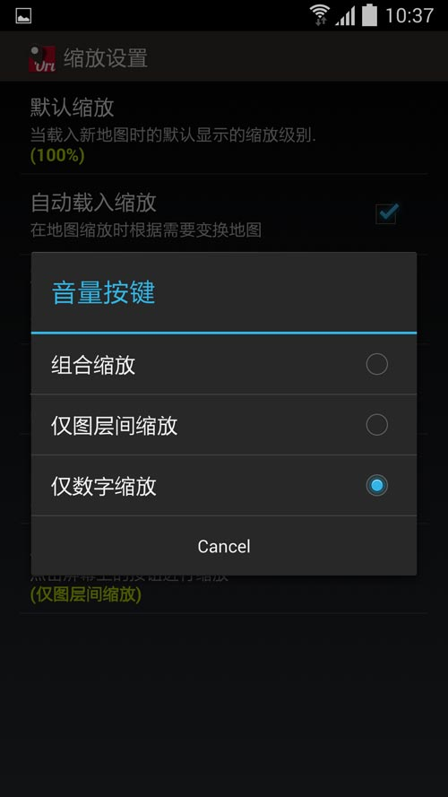

|
| 首页 | GeoTIFF | 今日花园Maps | OruxMaps | OZI | 资源 | 软件 | 联系 |
| 当前位置：OruxMaps ---> 在高清屏下OruxMaps的地图缩放功能应用 |
在高清屏下OruxMaps的地图缩放功能应用现在高档些的手机都是高清屏，普通地图在高清屏下显示时会缩小，看不清地图上的字体，如下图所示： |

|
可以使用OruxMaps的地图缩放功能，将地图放大就可以看清字体了，如下图所示： |

|
OruxMaps有两种地图缩放形式： 1) 层间缩放：在缩放时会尝试转到新的层。例如：原来是10层，放大后转到11层。 2) 层内数字缩放：在缩放时地图只在同一层内按比例缩放。 默认情况下OruxMaps有三种控制地图缩放的方法： 1) 用屏幕的多点触控方式进行缩放，此时是层间缩放形式。 2) 用“音量”键进行缩放，此时是层内数字缩放形式。 3) 用地图左边按钮条上的按钮进行缩放，此时是组合缩放形式，即先尝试层间缩放，如果地图已经处于顶层或者底层，则进行层内数字缩放。如下图所示： |

|
以上三种控制缩放的方法，可以通过 “设置”————>“地图” 进行自定义设置。如下图所示： |



| www.todaygarden.net |
版权所有 2010-2020 今日花园 |